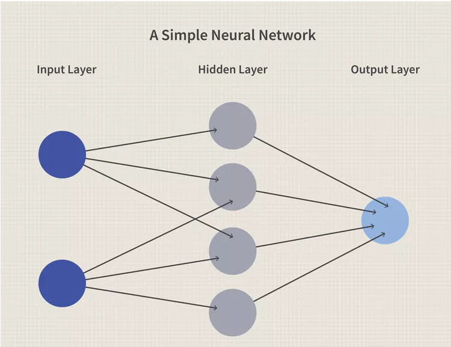
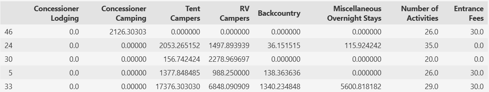
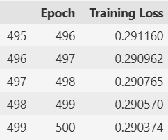
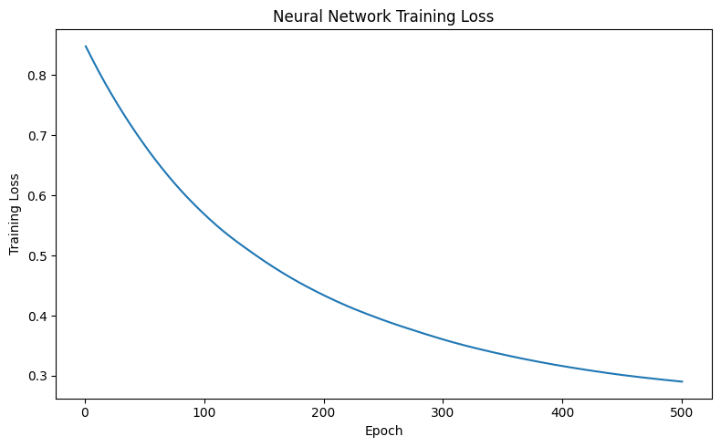
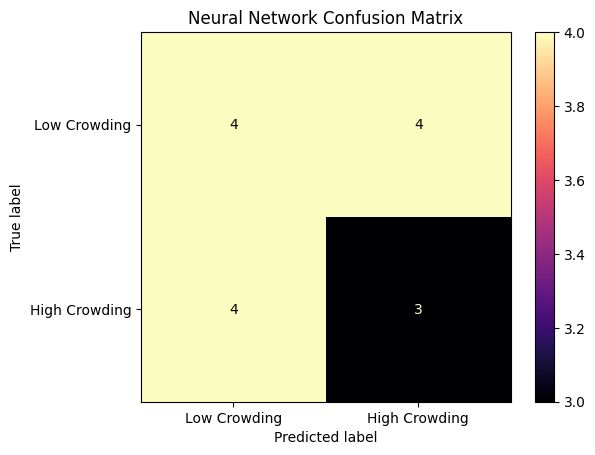
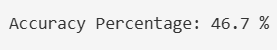

National Park Crowding Analysis
Neural Networks
Neural Networks are a machine learning model that is similar in function to the human brain. They are made up of nodes that are interconnected that process and learn patterns in data in order to recognize patterns. The nodes are similar to neurons in which they receive inputs and each works with a threshold and activation function. The links between the neurons carry information and are regulated with weights and biases, which determine strength and influence of these links. There are propagation functions which are mechanisms that process and moce data across the layers of nodes. Neural networks have a learning rule which allows the method to adjust weights and biases over time to improve accuracy. Neural networks work in three stages. The first is that data is fed to the network, the input. Then the network generates output based on the current parameters. Finally, there is iterative refinement where weights and biases are adjusted to improve performance.


Data Preparation
Neural networks are supervised learning models, so the dataset must contain numeric predictor variables and a known target label. The park-level dataset contains one row for each national park and numeric features related to recreation, lodging, camping, activities, and entrance fees. A binary target variable named High Crowding was used as the label. Parks above the median number of recreation visits were labeled 1 for high crowding, while parks at or below the median were labeled 0 for low crowding. The predictor variables were standardized so the features measured on different scales would contribute more evenly during training. The dataset was then divided into a 75% training set and a 25% testing set using train_test_split(). The training set was used to learn the neural network's weights while the testing set was used for evaluating how well the trained model performed on unseen parks. These sets are disjoint so that no park appears in both sets which prevents the model from being evaluated on observations it already used during training.


Resources
Results
The confusion matrix compares the actual crowding labels with the labels predicted by the neural network. Parks along the diagonal were classified correctly, while parks outside the diagonal were misclassified. The accuracy score represents the percentage of testing observations that the model classified correctly.

The final five epochs show that the training loss continued to decrease from 0.291160 at epoch 496 to 0.290374 at epoch 500. This means the neural network was still making small improvements as it adjusted its weights. These changes were very small suggesting that the model was beginning to converge and that additional epochs would likely produce only small improvement.

The training loss decreased throughout the 500 training epochs, dropping from approximately 0.85 to 0.29. This indicates that the neural network successfully learned patterns in the training data and reduced prediction error as the weights were updated through backpropagation. The curve decreases during earlier epochs before leveling off around the end of training. This means that the model was beginning to converge. Since the loss continued to decrease without sudden increases the training process was effective.

From the confusion matrix, the neural network correctly classified 7 out of 15 parks, 4 of the 8 low crowding parks and 3 of the 7 high crowding parks were labeled correctly. The network did not favor one class over the other; both low crowding and high crowding parks were misclassified at similar rates. This network resulted in an overall accuracy of only 46.7% which is below the 50% accuracy that would be expected from random guessing given the even split between classes. This shows that the neural network was unable to find a reliable predictive relationship between the park characteristics used and crowding level.

Conclusion
The neural network was another way to predict whether a national park would experience high or low crowding based on recreation, lodging, camping, activities, and entrance fee characteristics. On the test set, the model classified 7 of 15 parks for an overall accuracy of 46.7%. Errors were distributed evenly between the low and high crowding classes rather than favoring one. This performance is slightly below to what would be expected from random guessing on a roughly balanced test set, suggesting that this neural network configuration was not able to capture the relationship between park characteristics and crowding level. Compared to the other supervised learning methods, the polynomial Support Vector Machine achieved noticeably higher overall accuracy on this dataset. A likely explanation is that the small number of national parks available provided limited data for a model with various trainable weights. This made it difficult for the network to generalize. With a larger dataset or additional park characteristics, neural networks could provide stronger predictive performance. Overall, the results support the project's conclusion that national park crowding is influenced by multiple interacting factors and stating that model choice and data amount matter when applying machine learning methods to a small dataset.